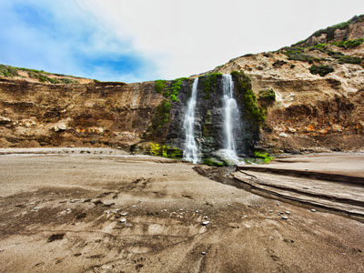
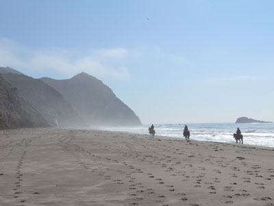
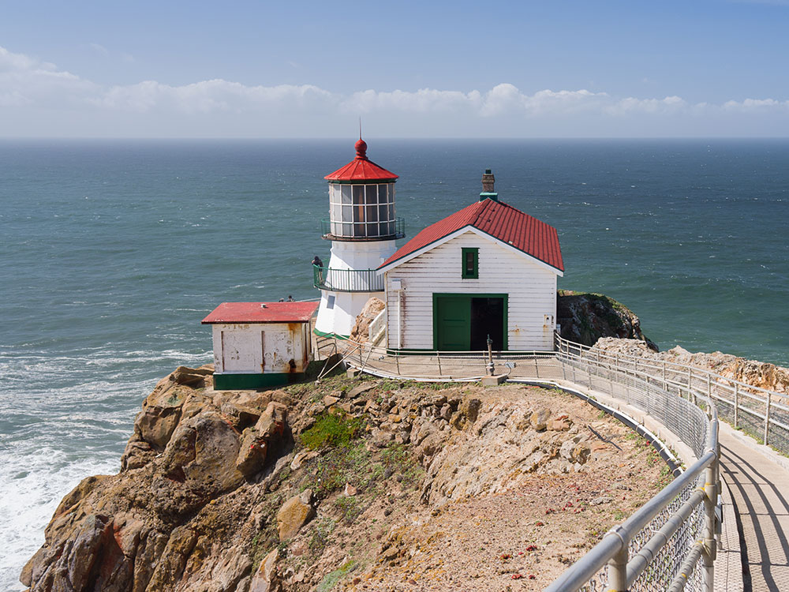
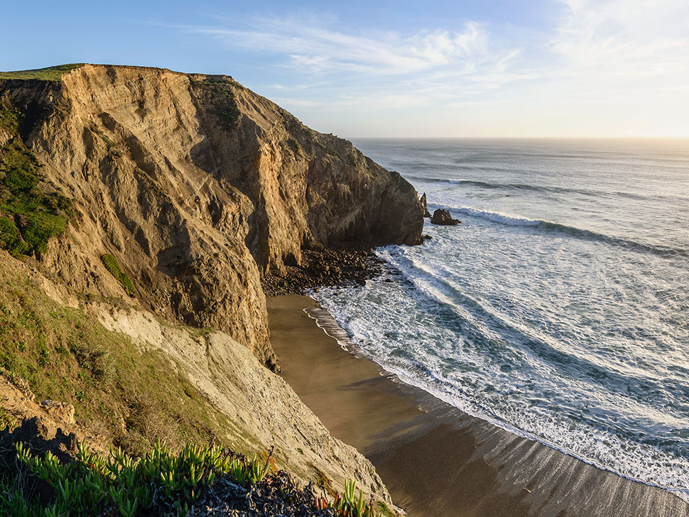
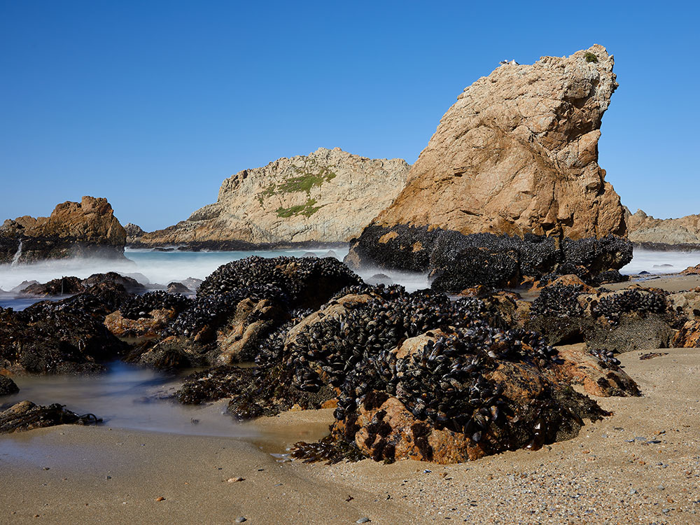
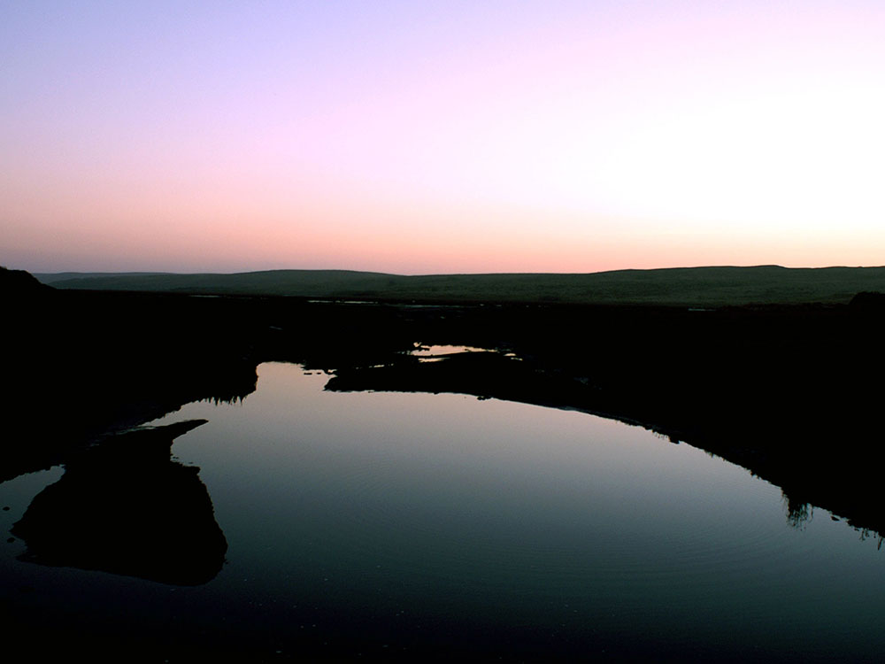
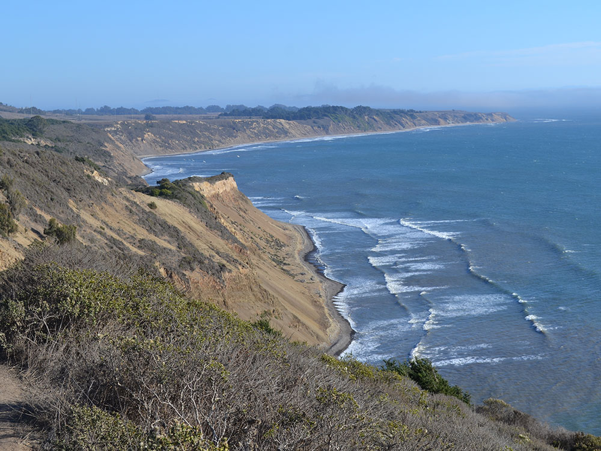
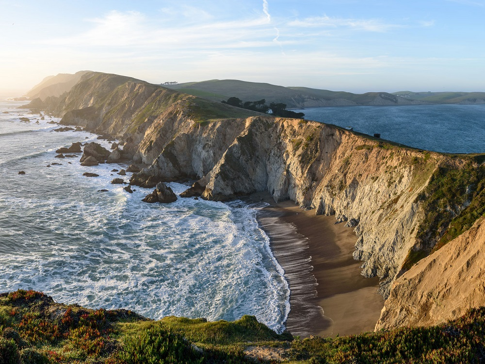

Prominent cape and popular Northern California tourist destination on the Pacific coast, and approximately 30 miles west-northwest of San Francisco
General Information
Visitor Centers: Vary by location; Bear Valley Visitor Center typically 9:00 AM to 5:00 PM
No fees for day-use activities
Backcountry camping: Fees apply via Recreation.gov
Special use permits required for events and large groups
Kehoe Beach (north of trail), Limantour Beach (southeast of lot), and Point Reyes/Great Beach (North Beach to historic Navy site)
Not allowed on most trails, in buildings, or backcountry campgrounds
Seasonal restrictions apply for wildlife protection
Spring for wildflowers and whale watching
Fall for tule elk and clear skies
How to Get There
From San Francisco, CA (38 mi): Take US-101 N across the Golden Gate Bridge, exit at Sir Francis Drake Blvd, continue west through Fairfax and Olema, then turn right on CA-1 and left on Bear Valley Rd to reach the park entrance.
Overview
Point Reyes National Seashore is a wild, fog-swept peninsula about 30 miles northwest of San Francisco in Marin County, with 71,000 acres of beaches, headlands, estuaries and forests and about 2.5 million visitors a year. Congress established it as a unit of the National Park Service in 1962 to protect one of the last largely undeveloped stretches of the central California coast so close to a major city. It is famed for its dramatic coastline, elephant seals and tule elk, hiking, and the historic Point Reyes Lighthouse, reached by 308 steps. The peninsula lies west of the San Andreas Fault and is geologically separate from the rest of Marin, and it holds 45% of North America’s bird species. People come for whale watching, beach walks, birding, wildflowers and wildlife, and for the working dairy ranches and oyster farms of Tomales Bay.
Access
The seashore is about an hour’s drive from San Francisco, reached by crossing the Golden Gate Bridge and taking US-101 north to Sir Francis Drake Boulevard, then continuing west to Olema and Highway 1. All roads on the peninsula are paved but narrow and winding, and distances are greater than they look, so allow plenty of time to reach the lighthouse, Drakes Beach or Limantour Beach. Public transportation is limited, and a car is the practical way to see the park. Cell service is spotty, and fuel and food are available mainly in Point Reyes Station, Olema and Inverness. Pets are allowed on only a few beaches and trails, and some areas close seasonally to protect wildlife.
Seasons
Point Reyes is a year-round destination, but conditions change quickly with fog and wind, and summers on the outer coast are often cool and foggy even when inland California is hot. Winter and early spring bring migrating gray whales that can be seen from the lighthouse and headlands, while northern elephant seals gather on the beaches in winter. Spring brings wildflowers across the bluffs and grasslands, and fall is known for clear skies and the tule elk rut. Winter storms can close trails and roads and cause landslides, and the lighthouse and its stairs can close in high winds. Check the NPS website for current closures before you go.
Things to Do
- Earthquake Trail: a 0.6-mile loop over the San Andreas Fault, with a fence that shifted 18 feet in the 1906 earthquake.
- Bear Valley Trail: the most popular hike, through a fern-filled canyon to Arch Rock at the coast.
- Mount Wittenberg: the park’s highest point, at 1,407 feet.
- Lighthouse: built low to sit below the fog; whale watching in winter.
Olema is the gateway to the visitor center, with services in Point Reyes Station and Inverness, and the Tomales Bay area is known for oysters and farm-to-table dining.
Visitor Centers
The Bear Valley Visitor Center near Olema is the main visitor center, with exhibits on the park’s natural and cultural history, a bookstore, maps and rangers to help plan your day, and it is the starting point for several popular trails. The Lighthouse Visitor Center sits at the end of the peninsula near the historic lighthouse and offers exhibits and a seasonal whale-watching base. The Kenneth C. Patrick Visitor Center at Drakes Beach has exhibits on the area’s marine life. Hours vary by season and location, so check the NPS website or call 415-464-5100 before visiting.
Camping and Lodging
There is no car or RV camping inside the seashore. Four hike-in backcountry campgrounds, Coast, Glen, Sky and Wildcat, and boat-in camping on Tomales Bay beaches are available by permit through Recreation.gov. The closest lodging is in the towns of Point Reyes Station, Olema and Inverness, which have inns, bed-and-breakfasts and vacation rentals, and Bolinas and Stinson Beach are nearby on the south side. Within about an hour, Mill Valley, San Rafael, Petaluma and Bodega Bay offer more hotels and motels, and Marin County and Sonoma County campgrounds can be found for car and RV camping outside the park. San Francisco is within about 1.5 hours.
This article uses material from the Wikipedia article "Point Reyes", and "Point Reyes National Seashore", which is released under the Creative Commons Attribution-Share-Alike License 3.0. Additional information from the National Park Service.
Featured Locations and Trails

Eric Leung, CC BY 3.0, via Wikimedia Commons; Image Size Adjusted
.jpeg){kind=link}
Alamere Falls
Waterfall in Point Reyes National Seashore, is a rare "tidefall", a waterfall that flows directly into the ocean

Oleg Alexandrov, CC BY-SA 3.0, via Wikimedia Commons; Image Size Adjusted

Wildcat Beach
2.9-mile-long beach deep within the Phillip Burton Wilderness in the southern part of the Point Reyes National Seashore

.jpg){kind=link}







